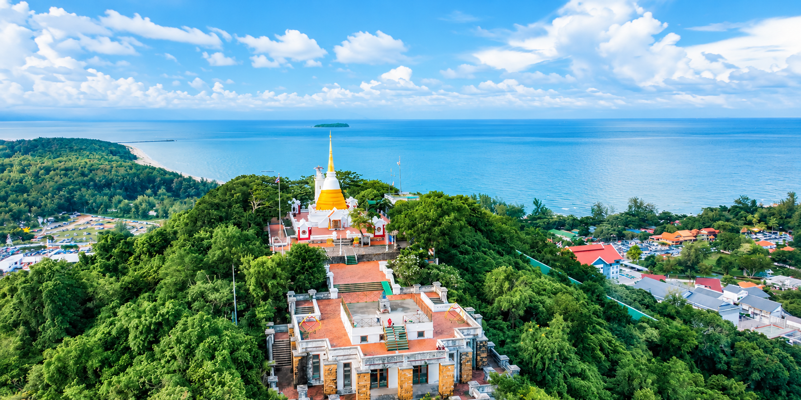

จุดชมวิว 360 องศา พระธาตุคู่เมืองสงขลา และลิฟต์แก้วขึ้นเขา

เขาตังกวน เป็นเนินเขาขนาดเล็กใจกลางเมืองสงขลา สูงประมาณ 80 เมตรจากระดับน้ำทะเล เป็นทั้งสถานที่ทางศาสนา ประวัติศาสตร์ และจุดชมวิวยอดนิยม สามารถมองเห็นทิวทัศน์เมืองสงขลา ทะเลสาบสงขลา อ่าวไทย และเกาะหนู–เกาะแมวได้แบบพาโนรามา
บนยอดเขามีพระธาตุเจดีย์หลวง ประดิษฐานพระบรมสารีริกธาตุ รวมถึงสถาปัตยกรรมสวยงาม เช่น ศาลาพระวิหารแดง และประภาคาร นักท่องเที่ยวนิยมขึ้นมาชมวิวทั้งด้วยการเดินขึ้นบันได หรือใช้ลิฟต์แก้ว
โดยทั่วไปเปิดประมาณ 08.30–18.00 น.
(ควรตรวจสอบเวลาล่าสุดก่อนไป เนื่องจากอาจมีการเปลี่ยนแปลง)
ค่าบริการลิฟต์โดยสาร (ไป-กลับ): ผู้ใหญ่ประมาณ 60 บาท / เด็กประมาณ 40 บาท
*ราคาอาจเปลี่ยนแปลง เดินขึ้นบันไดไม่เสียค่าใช้จ่าย
ตั้งอยู่ถนนสุขุม ตำบลบ่อยาง อำเภอเมืองสงขลา ใกล้หาดสมิหลาและตัวเมืองเก่า สามารถขับรถหรือใช้รถสาธารณะจากตัวเมืองสงขลาได้สะดวก
ที่ตั้ง:
ถ.สุขุม ต.บ่อยาง อ.เมือง จ.สงขลา
เปิด:
ประมาณ 08.30–18.00 น.
จุดเด่น:
ชมวิว 360° • พระธาตุ • ลิฟต์แก้ว
แผนที่สามารถซูมและเลื่อนดูได้ตามต้องการ (ค้นหาได้บน Google Maps ชัดเจน)